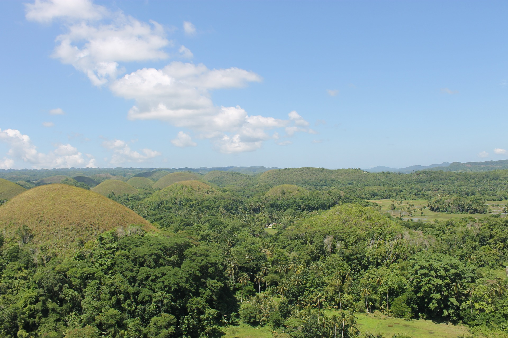
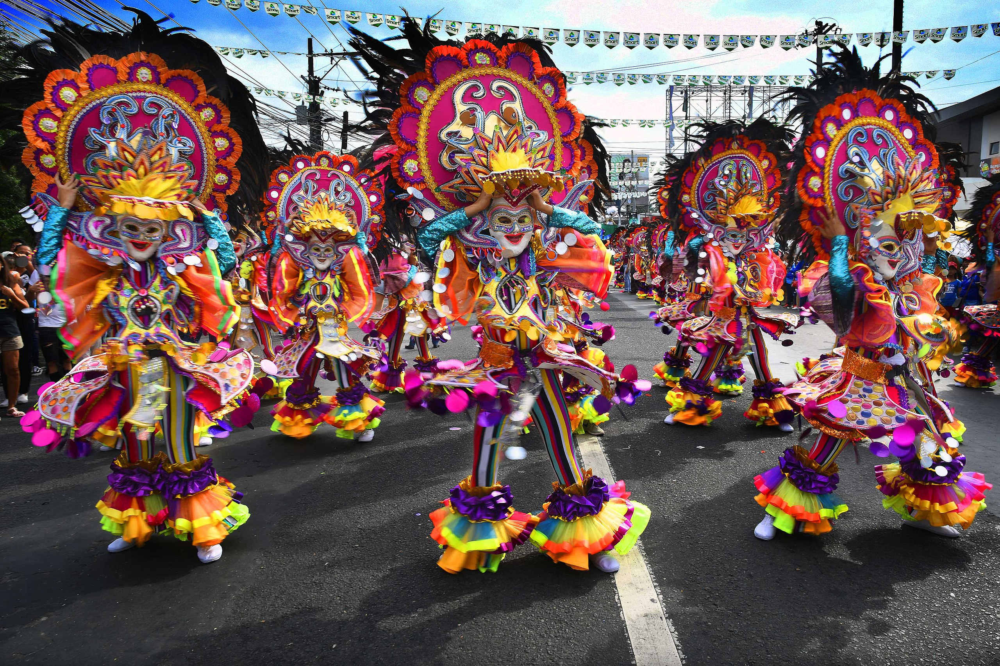
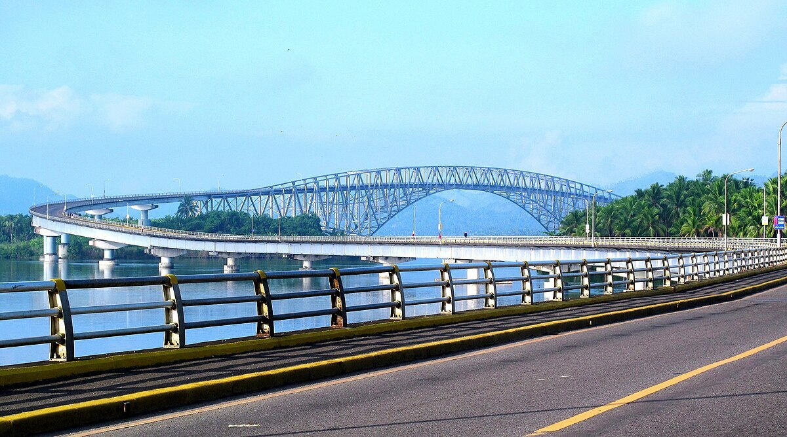

Figure 1: The Visayas, a central Philippine island group, stuns with beaches, diving, and historical gems like Cebu's colonial churches.

Figure 2: The MassKara Festival is a vibrant and colorful festival held annually in Bacolod City, Philippines. Literally translating to "many faces" from the Spanish "cara" and the English "mass", it's a celebration known for its elaborate masks and energetic street dancing.

Figure 3: The San Juanico Bridge is part of the Pan-Philippine Highway and stretches from Samar to Leyte across the San Juanico Strait in the Philippines. Its longest length is a steel girder viaduct built on reinforced concrete piers, and its main span is of an arch-shaped truss design.